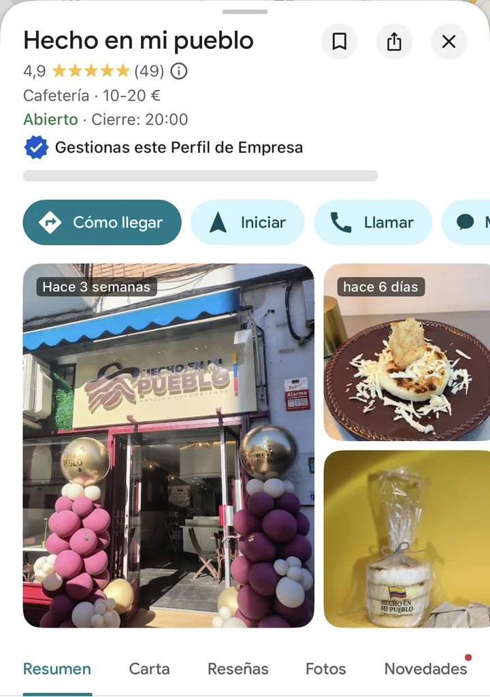

Cuando un negocio físico abre local nuevo y todavía no tiene página web, su escaparate más rentable no es una campaña de pago: es su ficha de Google Maps. Aquí te enseño, paso a paso y con datos reales, cómo reestructuramos la ficha de Hecho en mi pueblo en Carabanchel (Madrid), qué se movió en los primeros días y qué todavía requiere tiempo.
El punto de partida: un problema muy común en negocios locales
Hecho en mi pueblo es una cafetería y obrador colombiano en Carabanchel (Calle de Ramón Serrano, 34, Madrid). Sus dueños son Felipe y Steven, y Felipe enseña el negocio en Instagram (@hechoenmipueblo y @hechoenmipueblo.cafe) y en TikTok (@hechoenmipueblocol). Cuando empezamos el trabajo de SEO local el 8 de noviembre de 2026, no partíamos de cero limpio, sino de un escenario más complejo y muy habitual:
- Ficha heredada de otra ciudad: su perfil anterior seguía configurado como «Comida a domicilio» en Torrejón de Ardoz, sin dirección visible al público y con una descripción desactualizada.
- Ficha duplicada sin reclamar: en el local nuevo de Carabanchel ya existía una segunda ficha creada de forma espontánea con reseñas separadas.
- Sin página web propia todavía: toda la captación orgánica en Google dependía al 100 % de la ficha de Google Business Profile y del enlace directo a WhatsApp y redes.
Paso 1: fotografiar la ficha antes de tocar un solo campo
El primer error al optimizar Google Maps es editar todo a ciegas y no saber luego qué funcionó. Antes de ejecutar cambios, registramos una foto completa de la ficha (categorías, zonas, horarios, atributos, enlaces y fotos). La primera medición de posiciones llegó el 18 de noviembre, con la ficha ya operativa, y desde entonces cada medición repite el mismo método: búsqueda manual y una cuadrícula geográfica de 49 puntos alrededor del local.
También definimos una regla innegociable: nombre exacto del rótulo, sin rellenarlo con palabras clave artificiales. Google aprobó el nombre el mismo día y evitamos suspensiones innecesarias.
Paso 2: traslado, doble verificación por vídeo y fusión sin perder reseñas
Al añadir la dirección física en Vista Alegre / Carabanchel, Google disparó la verificación por vídeo. Con la colaboración de los dueños grabamos el recorrido real del local y, tras una segunda verificación por vídeo el 18 de noviembre, conseguimos fusionar la ficha duplicada.
El resultado inmediato fue clave: en lugar de empezar con 0 reseñas, Google sumó las valoraciones de ambas fichas y el negocio arrancó consolidado con 34 reseñas y un 4,9 sobre 5, recuperando teléfono, WhatsApp, Instagram y TikTok.
Paso 3: el detalle de las categorías en inglés (y los 5 ajustes de fondo)
Las categorías son una de las señales de relevancia más fuertes de Google Maps, y aquí aparece un fallo muy poco documentado: en español, el panel de Google Business Profile muestra hasta cuatro opciones llamadas exactamente «Cafetería» que en realidad corresponden a categorías internas distintas.
Truco práctico: si cambias temporalmente el idioma del panel a inglés, ves el nombre real de cada categoría y evitas elegir una equivalencia equivocada.
Haciendo eso seleccionamos con precisión Cafe como categoría principal y seis secundarias exactas: Colombian restaurant, Bakery, Breakfast restaurant, Brunch restaurant, Meal delivery y Caterer. Ese mismo día, el 15 de noviembre, cerramos los otros cuatro ajustes:
- Horario real: quitamos el «Cerrado temporalmente» del traslado y cargamos el horario de apertura del local.
- Zonas de servicio reales: sustituimos las zonas antiguas de Torrejón por las 15 zonas reales de reparto en Madrid.
- Descripción nueva (683 de 750 caracteres): enfocada en obrador propio, desayunos, café de especialidad y Carabanchel.
- Atributos y pagos revisados: eliminamos el aviso heredado de «Solo se acepta efectivo» y marcamos tarjetas de débito y crédito.
Ojo con lo que llega después: al fusionar las fichas el 18 de noviembre, Google añadió atributos de la otra (como «sirve cenas», que el local no ofrece). No los aceptamos ni los borramos a ciegas: los revisamos uno a uno con los dueños.
Paso 4: carta completa (54 productos), fotos reales y publicación a WhatsApp
Una ficha con texto bonito pero sin oferta concreta pierde búsquedas específicas de producto. Entre el 19 y el 20 de noviembre cargamos la carta completa en la ficha: 54 productos organizados en 6 secciones (arepas, antojos, postres, bebidas calientes, refrescantes y con alcohol).
A eso sumamos 6 fotografías reales del producto y del local (desayuno colombiano, café de especialidad, canasticas, tarta de zanahoria, arepa con queso e inauguración con rostros de clientes difuminados), 2 imágenes legibles de la carta y una primera publicación del Desayuno Campesino con botón directo a WhatsApp y mensaje prellenado. El 23 de noviembre llegó la segunda, las Canasticas de mi pueblo. Además de ayudar en Maps, esta información estructurada y coherente alimenta también las recomendaciones en buscadores con IA (GEO).
Paso 5: el sistema de reseñas (3 detalles que casi ningún negocio aplica)
Conseguir reseñas es solo la mitad del trabajo; la otra mitad es cómo se gestionan para que convenzan al siguiente cliente que mira la ficha:
- Responder siempre desde Google Maps, no desde el panel de empresa: en Maps aparecen las fotografías que subió el cliente y sus subcalificaciones de comida, servicio y ambiente. Eso permite responder con contexto real en vez de copiar un «gracias por tu visita» genérico.
- Guía de tono propia y variedad real: definimos reglas claras para responder con cercanía colombiana respetuosa (sin jerga forzada), variando aperturas, sin inventar platos que el cliente no nombró y con protocolo específico para reseñas de 3 estrellas o menos.
- Uso selectivo del botón «Me gusta»: no hay pruebas de que darle «Me gusta» desde la cuenta del dueño suba posiciones en Maps, así que no lo usamos como táctica de ranking. Solo lo marcamos en reseñas de 5 estrellas con texto detallado o fotos reales, como agradecimiento visible, y nunca en reseñas sin texto.
Resultados iniciales (y qué todavía no ocurre en una semana)
En SEO local conviene desconfiar de quien promete el puesto 1 en 48 horas. Estos son los datos reales observados en los primeros días tras la fusión y la puesta a punto:

- Reseñas activas: de 34 reseñas (4,9 ★) el 18 de noviembre a 49 reseñas el 26 de noviembre (+15 en 8 días, todas respondidas y casi todas desde Google Maps).
- Primeras señales en búsquedas de nicho: entre la medición del 18 y la del 22 de noviembre (con la carta ya cargada el 19), «arepas carabanchel» pasó del puesto 32 al 28 en búsqueda manual. En la cuadrícula de 49 puntos aparece en 7, con posición media de 17,3, y en el punto junto al local asomó en los puestos 2 y 3 para «panadería colombiana» y «cafetería colombiana». Es una medición provisional: se hizo con el local cerrado, y Maps favorece a los negocios abiertos.
- Lo que aún requiere recorrido (sin humo): en términos mucho más competidos como «desayunos carabanchel» o «brunch carabanchel» todavía no entra en el radar de 49 puntos. Expandir ese radio depende ahora de mantener el ritmo mensual de reseñas con texto y dar el siguiente paso lógico: lanzar una web rápida a medida enlazada a la ficha.
Resumen práctico: qué sí mueve la ficha y qué hace perder tiempo
| Acción en la ficha | Impacto real | Qué hacer en la práctica |
|---|---|---|
| Categoría principal y secundarias | Muy alto (ranking) | Revisarlas con el panel en inglés si hay duplicados ambiguos en español. |
| Fusión de fichas duplicadas | Alto (autoridad) | Unificar en una sola ficha verificada para concentrar reseñas y evitar competencia interna. |
| Carta / servicios + fotos reales | Alto (relevancia y clics) | Cargar oferta completa por secciones y subir fotos propias sin bancos de imágenes. |
| Respuestas desde Google Maps | Medio-alto (conversión) | Contestar mirando fotos y subnotas del cliente, con tono natural y sin plantillas repetidas. |
| Botón «Me gusta» en reseñas | Sin efecto demostrado en ranking | Usarlo solo en 5★ con buen texto o fotos, como agradecimiento visible. |
| Rellenar el nombre con keywords | Riesgo alto | Evitarlo: usar el nombre exacto del rótulo para prevenir suspensiones de ficha. |